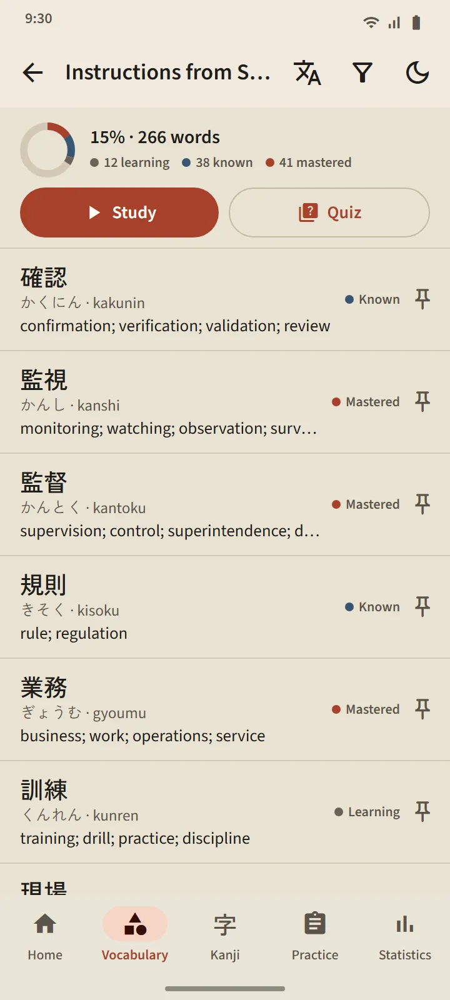

Vocabulary
Vocabulary that actually sticks
Every card is scheduled with FSRS, a modern spaced-repetition algorithm. You rate yourself, and the app works out when the word comes back: the next interval is printed on every button. Words climb from New through Learning and Known to Mastered, and that last stage can only be reached through a quiz.
- 95 topics in 11 groups. The Workplace group has 21 topics, from instructions from supervisors, workplace safety, schedules and contracts to factory work, construction, agriculture, restaurants, hospitality and caregiving.
- One screen per deck. Percent complete, the status of every word, Study and Quiz buttons.
- A pocket dictionary of 38,085 words. Search by kanji, kana, romaji or meaning.
